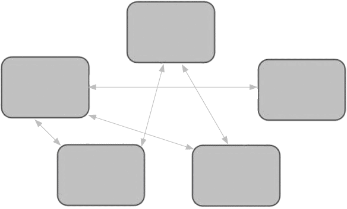

In the ‘controlled’ version of the Seven Steps, verbalisation comes last. In this version, it comes now. Because instead of writing (or ‘linking’) around the information, instead we are going to try to use the information in an improvised and verbal way.
Before we get into the ‘drills’ needed to familiarise ourselves with the information we’ve prepared, it’s important to explain why verbalisation is so crucial to this kind of explanation.
Earlier, I talked about the importance of familiarising our brains and our tongues with the words we’re going to say. That’s certainly the case with planned speeches and presentations. With dynamic explanation, it’s not just important, it’s essential. If the first time you try to construct verbal explanations is when you’re doing it for real, the chances of it going well are really quite low in my experience.
My layman’s reading of why this works is this. In any interaction with another person or group of people, my brain is having to do a few things: it’s working out what’s being asked of me, working out how I can respond, working out which parts of my knowledge to share and how to share them, gauging how much time I have to do that and how much detail the people I’m speaking to require on this subject. That’s a lot for my brain to be busy with!
I can make all that a lot easier by front-loading some of the calculations in advance. If I do this, I can take as much time as I like beforehand to make good decisions about what to include and how to link the information together. Also, if these decisions have been made, I’ll have enough brain space (for want of a more technical phrase) to evaluate the moment that I am in and the questions I’m being asked.
I think of my mind like a processor in a PC. If you run too many different programmes on a PC, it slows down and all the programmes underperform. If you close some programmes, the performance of the others improves. In a similar vein, the more I’ve got my mind used to the information I want to use, the more capacity I have for decisions in the moment. That’s the theory anyway!
Crucial to doing this well is verbalisation. For me it’s the differentiator. Done well and methodically, it elevates my ability to explain beyond anything I could do by preparing written notes and learning them by rote. It’s a lesson I’ve learned a few times over, not least when I was dispatched to cover the Dutch elections of 2017.
Next to the Dutch parliament in The Hague is a square called Het Plein. On one side is the parliament complex itself, on another cafés have their tables set out under umbrellas, and, on market day, stalls selling books, food and clothes surround a statue of William I, Prince of Orange.
In 2017, this square was my home for a few days as we covered the election campaign and election day itself. On the first morning of broadcasting, I was waiting for my first ‘live’ to come around. I’d done any amount of preparation and felt good to go. Except I wasn’t. Talking to a colleague about the campaign I was nowhere near as fluent or clear as I needed to be. With the help of our producers, I’d done a perfectly good job of organising the information I needed. On my computer, the preparation looked as good as it could be. What I hadn’t done was verbalise the information enough. Nowhere near enough.
For me, it’s as if my mouth and brain need to get used to using the words. Somehow it helps to create a network of connections around the information and to situate words and phrases around that network. Verbalising makes the information you have much, much more usable.
That morning, all was not lost. I still had some time to spare and so, with my notes on my phone for reference, I walked around the square talking to myself. Goodness knows what the traders setting up that day’s market thought as I wandered by reciting coalition government combinations, but I didn’t let feeling a little daft get in the way of doing it. I’d think of a strand of the story and try to talk through it. It was worrying how bad I was at first but, within minutes, where I’d been stumbling, I flowed, where I struggled to explain the relationship between different elements, now I could do so coherently.
I see other reporters and correspondents doing this all the time too. I’ll sometimes be doing a stint in Downing Street on the latest political drama. On those days, the street can be quite cosy as TV journalists gather close in order to have the famous black door over their shoulder. It’s not unusual to see one journalist or another quietly talking to themselves.
In our own ways, we’ve all worked out that if the first time you say something is the time that it matters, you’re taking a chance. Only when you speak will you really understand which phrases work, which points work, which ideas you’re comfortable handling and which names you’re confident using. I know I need to try out what I’ve learned if I’m to make the most of it.
To help me do this, I developed a series of ‘drills’. I find them essential if I’m without notes. But before we launch into those drills, a word about notes themselves.
During my time as a presenter, I’ll have done hundreds if not thousands of ‘two-ways’ – those moments in the news where the presenter talks to a reporter. If a reporter is joining me on the set of my programme, most will arrive with either no notes or a single page of them. Sometimes, though, a less experienced colleague will arrive laden with pages of notes. They’re anxious they may forget an important detail. I know that feeling too. And there have been times I’ve shown up with lots of notes. Even now that I’m more experienced, if I’m reporting on a complex story, I may still bring a single page of well-organised notes. And here’s what almost always happens – I never look at them.
Notes can be useful if there’s a specific quote, statistic or fact that you want to be sure of. In a breaking-news environment, reporters will refer to notes a lot and that works both for them and the audience. But in most scenarios, such as a class discussion, a conference panel, an interview or a client meeting, notes are very unlikely to help you. It’s just not possible to keep looking down, to find different pieces of information according to what you’re being asked and to talk engagingly at the same time. At least, it’s beyond me, and I’ve seen a lot of other people coming unstuck trying.
If I’m joined on TV by a reporter or guest who may be nervous, I suggest that they come a few minutes early. We stand on set and just chat about the story. This gets them used to the environment (which helps, as we’ve already discussed) and gets them flowing on the subject. After we’ve chatted, I always suggest not to worry about the notes, or at least to pick the most important page and just leave that on the table. And I say, ‘Please keep on talking just as you have been doing.’ I’m not doing this to be unsupportive or to deliberately give them a journalistic baptism of fire. Far from it. I’m doing it because I know not having pages of notes is going to make their life easier, not harder. If the notes aren’t there, they’ll talk – almost certainly superbly. If the notes are there, they’ll look down, invariably not be able to find the words they’re looking for and lose their flow. As we’re about to see, notes are very useful as you prepare to explain yourself verbally. But when it comes to actually speaking, they can create more problems than they solve.
What can really help are the following drills . . .
Step by step you’re going to get used to using the information that you’ve prepared. And each step is going to involve saying this information out loud.
Imagine someone has asked you an open-ended question about the subject of this strand. Allowing yourself to look at the information, try talking through it. Does the order of the information work? If not, switch it around. Try doing it again. If you’re happy with how you joined two of the elements, make a mental note of the phrases or language you used and resolve to keep using them. If one join lacks precision and fluency, experiment with how you could improve it. Try the whole thing again.
As you do this, the whole strand may take less than a minute, or it may take a little longer. We want how you talk on each strand to be precise and high protein. We’re less concerned about its duration.
Do this with each of your strands. Some you’ll get very quickly, while others will take time. You might find you’re missing some information, in which case go back to your original list of distilled elements to see if you can fill the gap. And all the time, check that what you’re saying supports the ‘primary point’ you’ve chosen for each strand.
On many occasions, you’ll only have three to five strands and this won’t take too long. This can be excellent preparation ahead of regular meetings or conversations where you don’t need to share a lot of information but still want to make sure you say it well. On the occasions that there are more, often these are subjects you may talk about repeatedly. If it’s for an interview, it won’t be the last time you need to explain your achievements, skills and ideas. If it’s about a major piece of work you’re involved in, you may use these explanations again and again. I did a lot of work in the early days of the 50:50 Project refining my explanations for dynamic scenarios. Since then my colleagues and I have used those explanations hundreds of times. The kind of clarity and fluency you gain from working through this process will pay you back, I promise.
Next, pick any two strands and talk through one and into the other. Think about how you shift from one to the other. Once more, if you do it well, make a mental note. If you don’t, how can you do it better? We’re aiming for you to sound focused and informed but also conversational and fluent.

Practise moving from strand to strand in different combinations.
Keeping picking out different strands and talk through one into the other. Sometimes they may complement each other, other times they may be disconnected. For the latter, explore how you can shift from one to the other while maintaining your fluency on each strand.
The way we shift from one section of pre-prepared information to another is absolutely crucial to delivering dynamic explanation. You can’t really practise this too much. And central to your success will be having a range of bridging phrases at your disposal.
Earlier, we looked at ‘joining phrases’ that move you from one element to another within a controlled explanation. These can be specific to the elements because you are choosing the order in which everything comes.
With dynamic explanation, we don’t know the order in which we’ll be using our strands. As such, getting from A to B or from C to A smoothly is vital to constructing explanations in real time. ‘Bridging phrases’ perform the same function as joining phrases but are generic. They don’t contain any specific content, but they allow us to manoeuvre between strands with minimum fuss. Here are some of my favourites.
• That’s one area I’d emphasise, another is . . .
• There is, though, more than one aspect of this issue to consider. Another is . . .
• Another thing I’d stress is . . .
• And while that’s important, so is . . .
• This also links to . . .
• From this, we can also look at . . .
• There’s more than one dimension to this. Another is . . .
• But to understand this issue, we can’t only look at this – we also need to look at . . .
• And that connects to . . .
• And if X is one aspect of that, Y is another . . .
• There are, though, several ways of explaining this. Another is . . .
As you can probably tell, I’m a bridging-phrase enthusiast. These are just some but there are many more. You’ll come up with your own ones too. They all, in their different ways, mark that an aspect of your explanation is finished and move you on to the next.
Try using some of these phrases as you talk through one strand and into another. Looking at your notes and a list of bridging phrases is fine. This part of the process is all about fluency. The more you do it, the more fluent you will become. As well as that, the more you do it, the easier memorising all this will be when the time comes.
There is, though, one more thing that, right in the moment, can help you select the best information to use.
If we’re to successfully explain ourselves in fluid, unpredictable environments, we need time to think.
In a situation where you know which strands you’re going to talk about, you’re already going to be excellent either with notes or off by heart. Here, though, we don’t know what we’re going to be asked and would appear to have no time at all to line up what we want to say.
Finding time to get your thoughts organised in this situation may not feel at all realistic. But within those interactions are pockets of space that we can make the most of.
In part, this is about knowing where that space lies and having the confidence to use it. In part, it is about creating space for ourselves. And if, in the middle of the most important and pressing of interactions, you can successfully create space for yourself to think, the effect can be incredibly powerful. It can feel like playing the game by different rules. With more time, we can make better decisions about how to respond to what other people are saying. We can convincingly match what we’re being asked with what we want to say. It’s hard to overstate the impact this can have on the confidence, calmness and clarity with which you can talk.
My discovery of ‘time’ as the key to dynamic explanations was initially inspired by one short passage of a book that I read on a holiday.
Matthew Syed’s Bounce came out in 2010 and I think I read it that summer or the one after. It’s a book about sporting success and performance and the degree to which innate talent is a factor. (Syed’s thesis is that ‘talent’ is much less of a factor than is sometimes claimed and that, in fact, purposeful practice is more significant.)
A few pages in, there is a section that had such an impact on me that I’ve remembered it ever since.
The section begins with Matthew Syed describing a promotional day with various people invited to play a little tennis with former Wimbledon champion Michael Stich. I’ll let Matthew Syed take up the story. Bear in mind as you read that Syed was a table-tennis professional before becoming a successful writer.
I asked Stich to serve at maximum pace. He has one of the fastest serves in the history of the sport – his personal best is 134 mph – and I was curious as to whether my reactions, forged over twenty years of international table tennis, would enable me to return it.
Michael Stich agrees. He leaves to warm up and then returns.
Stich tossed the ball high into the air, arched his back, and then, in what seemed like a whirl of hyperactivity, launched into his service action. Even as I witnessed the ball connecting with this racquet, it whirred past my right ear with a speed that produced what seemed like a clap of wind. I had barely rotated my neck by the time it thudded against the soft green curtains behind me.
Matthew Syed’s table tennis experience had made no difference.
To understand this, he visits an academic at Liverpool John Moores University called Professor Mark Williams. First, we learn that professional tennis players look at the body to read the serve (I’d been looking at the racquet which, I imagine, is just the start of where I’ve been going wrong . . .). Professor Williams explains:
It is not as simple as just knowing about where to look; it is also about grasping the meaning of what you are looking at. It is about looking at the subtle patterns of movement and postural clues and extracting information. Top tennis players make a small number of visual fixations and ‘chunk’ the key information.
In other words, the professionals know what information to look for and know what to do with that information. That gives them a significant edge.
Then came the bit which, over time, has come to change my thinking about explanation. Matthew Syed quotes Janet Starkes, professor emeritus of kinesiology at McMaster University in Canada, who says this:
The exploitation of advance information results in the time paradox where skilled performers seem to have all the time in the world. Recognition of familiar scenarios and chunking of perceptual information into meaningful wholes and patterns speeds up processes.
I loved all of this. I’ve always played and watched a lot of sport and often wondered why some players appear to have more time. I liked too the idea of the importance of recognising ‘familiar scenarios’ and how that can speed our responses to them. It all had a great impact on me – though, at the time, I confess almost entirely in terms of how I thought about excellence in sport (or a lack of excellence in my case . . .).
That was 2010 – just around the time that I started presenting regularly on TV. In the years that have followed, I’ve faced many different situations where I’ve needed to be able to explain myself clearly and persuasively, without notes and often with the verbal equivalent of a Michael Stich serve coming my way.
It was fascinating to go back to this passage as I write this book. While I remember and reference the Stich story regularly, I am pretty sure I’ve not reread it since 2010. Going back through it, the relevance to explanation is there at every turn – from its wider ambitions to understand how we create time and space for our brains to make decisions, to how we can organise and learn information in advance of being in dynamic scenarios, to even the use of the word ‘chunking’.
When I read that passage in 2010, I didn’t understand how the concepts of memory, ‘chunked’ knowledge and time connect so powerfully to communication and explanation. However, in the years that have followed, I started to make that connection. Just as the best tennis players can both read a serve to give themselves time and then, because of their training, have the right response to it, so, in conversation, we can spot what is being asked of us, create space to think about how to respond and be ready with the right information for that moment.
My pursuit of time led me to the final two steps in my approach to dynamic explanation.
In Step Six, we’ll look at how we can memorise information and how best to use it.
Step Seven is focused on predicting which questions we may be asked and, in the moment, assessing what information is required of us and how best to explain it.
All being well, both will give us the space we need to think as clearly as possible.
QUICK CHECK
• Have you verbalised your information so that it feels comfortable to say?
• Are you comfortable moving between different strands of information?